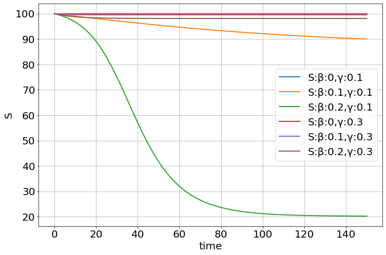

@patch
def inflow(self:Simulation,cname,s):
c=[x for x in self.components if x.name==cname]
if not c:
raise ValueError('No component named "%s"' % cname)
c[0].inflow(s)
@patch
def outflow(self:Simulation,cname,s):
c=[x for x in self.components if x.name==cname]
if not c:
raise ValueError('No component named "%s"' % cname)
c[0].outflow(s)
@patch
def stock(self:Simulation,name,initial_value=0,
min=None,max=None,
plot=False,save=None):
c=Component(name+"'=",initial_value,min,max,plot,save)
self.components.append(c)
return cCore Simulation
The main simulation functions used for adding, running, and visualizing ODEs
Preliminaries
pyndamics3 version 0.0.32
patch
patch (f)
Decorator: add f to the first parameter’s class (based on f’s type annotations)
patch_to
patch_to (cls, as_prop=False)
Decorator: add f to cls
copy_func
copy_func (f)
Copy a non-builtin function (NB copy.copy does not work for this)
RedirectStdStreams
RedirectStdStreams (stdout=None, stderr=None)
Initialize self. See help(type(self)) for accurate signature.
InterpFunction
InterpFunction (x, y, name)
Initialize self. See help(type(self)) for accurate signature.
array_wrap
array_wrap (_f)
from_values
from_values (var, *args)
Supporting functions for solving ODE and MAPS
simfunc
simfunc (_vec, t, _sim)
rk45
rk45 (function, y0, t_mat, _self, *args, **kwargs)
rkwrapper
rkwrapper (function, _self)
rk4
rk4 (function, y0, t_mat, *args, **kwargs)
rk2
rk2 (function, y0, t_mat, *args, **kwargs)
euler
euler (function, y0, t_mat, *args, **kwargs)
mapsolve
mapsolve (function, y0, t_mat, *args)
vector_field
vector_field (sim, rescale=False, **kwargs)
phase_plot
phase_plot (sim, x, y, z=None, **kwargs)
Make a Phase Plot of two or three variables.
| Type | Default | Details | |
|---|---|---|---|
| sim | Simulation | This is a simulation object. | |
| x | str | Name of the variable to plot on the x-axis | |
| y | str | Name of the variable to plot on the y-axis | |
| z | NoneType | None | Name of the variable to plot on the (optional) z-axis |
| kwargs | |||
| Returns |
Component
Component (diffstr, initial_value=0, min=None, max=None, plot=False, save=None)
Initialize self. See help(type(self)) for accurate signature.
Examples of Components
The Simulation class is the primary one to use
Simulation
Simulation (method='odeint', verbose=False, plot_style='.-')
Initialize self. See help(type(self)) for accurate signature.
An alternate way of specifying the equations - stocks, inflows and outflows
sim=Simulation()
sim.add("y'=a - b*y",100)
sim.params(a=10,b=2)
print(sim.equations())y'=a - b*y
a=10
b=2
#sim.add("y'=a - b*y",100)sim=Simulation()
sim.stock("y",100)
sim.inflow('y','a')
sim.outflow('y','b*y')
sim.params(a=10,b=2)
print(sim.equations())y'=+a-(b*y)
a=10
b=2
Some useful functions
mse_from_sim
mse_from_sim (params, extra)
model
model (params, xd, sim, varname, parameters)
repeat
repeat (S_orig, t_min, t_max, **kwargs)
This is my solution to an age-old problem of storing data in loops
Storage
Storage (save_every=1)
Initialize self. See help(type(self)) for accurate signature.
y=1
x=0
dx=0.01
a=0.1
S=Storage() # this object will store data
S+=x,y # adds this to the store, one data point at a time
while x<=10:
dy=a*y*(50-y)*dx
y+=dy
x+=dx
S+=x,y # adds this to the store, one data point at a time
x,y=S.arrays() # returns an array representation of all those data points
plot(x,y)x,y(array([0.000e+00, 1.000e-02, 2.000e-02, ..., 9.990e+00, 1.000e+01,
1.001e+01]),
array([ 1. , 1.049 , 1.1003496, ..., 50. , 50. ,
50. ]))pso_fit_sim
pso_fit_sim (varname, xd, yd, sim, parameters, n_particles=30, n_iterations=-1, progress_interval=100, plot=False)
swarm
swarm (parameters, fitness, number_of_particles=30, extra=None)
Initialize self. See help(type(self)) for accurate signature.
particle
particle (parameters, fitness_function, extra=None)
Initialize self. See help(type(self)) for accurate signature.
Stochastic Sims
Stochastic_Component
Stochastic_Component (name, initial_value=0, assignment_str=None, min=None, max=None, plot=False, save=None)
Initialize self. See help(type(self)) for accurate signature.
Stochastic_Simulation
Stochastic_Simulation ()
Initialize self. See help(type(self)) for accurate signature.
Struct
β=0.2
γ=0.1
So=990
Io=10
dynamic_sim=sim=Simulation()
sim.add("N=S+I+R")
sim.add("S'=-β*S*I/N",So)
sim.add("I'=+β*S*I/N-γ*I",Io)
sim.add("R'=+γ*I",0)
sim.params(β=β,γ=γ)
sim.run(200)
stoch_sim=sim=Stochastic_Simulation()
sim.add("-S+I",'β*S*I/N',S=So,I=Io)
sim.add("-I +R",'γ*I',R=0)
sim.add("N=S+I+R")
sim.params(β=β,γ=γ)
sim.run(200,Nsims=100)
for i in range(100):
plot(sim.t,sim.S[i],'bo',alpha=0.05)
plot(sim.t,sim.I[i],'ro',alpha=0.05)
plot(dynamic_sim.t,dynamic_sim.S,'c-')
plot(dynamic_sim.t,dynamic_sim.I,'m-')
print(sim.func_str)100%|██████████| 100/100 [00:00<00:00, 981.58it/s]@numba.jit(nopython=True)
def _propensity_function(population, args):
S,I,R = population
β,γ = args
N=S+I+R
return np.array([
β*S*I/N,
γ*I,
])
sim.extinction_timesarray([173.34641097, 147.2142087 , 173.25806905, 139.46093989,
141.46950986, 184.82415756, 177.24507978, 162.89244257,
135.74875203, 142.12308477, 124.1452361 , 103.78449248,
136.24764907, 141.64503261, 149.02049576, 154.08471155,
144.36046575, 119.08888338, 126.56068263, 150.96714048,
185.46651177, 137.75710629, 145.83280943, 161.45092743,
135.52623017, 158.22300444, 116.4663216 , 142.45833271,
131.58919096, 132.83514533, 158.67032537, 134.80159232,
138.67325803, 145.34862087, 175.71694956, 168.1073566 ,
138.83605961, 131.97878544, 132.29909228, 136.24188252,
141.72408479, 149.24895424, 140.01290625, 134.00439041,
128.82634577, 136.28831928, 121.92344439, 157.01860147,
130.87983952, 190.04334344, 16.78030852, 175.76630482,
116.42534703, 136.68052456, -1. , 136.61710555,
183.78243168, 159.79643709, 148.65710129, 154.9672915 ,
160.71863761, 166.15813836, 127.78792513, 139.85561763,
177.64067511, 131.71662539, 126.83004396, 135.63721802,
146.22285002, 170.34515699, 129.9729188 , 135.8394829 ,
161.82999371, 154.39877207, 165.24073111, -1. ,
134.46078024, 131.01546673, 121.36461215, 168.43992536,
160.32262449, 144.3013475 , 199.74725228, 111.65022834,
182.77090173, 113.66447594, 115.29110107, 138.87220524,
175.75330356, 127.62963742, 137.38328691, 137.9071455 ,
198.34523822, 144.94021945, 136.85662852, 166.1285249 ,
176.12888724, 141.47111244, 146.1237378 , 177.42190037])stoch_sim=sim=Stochastic_Simulation()
sim.add("+X",'X-X**2/N',X=10)
sim.add("-X",'X**2/N')
sim.params(N=10)
sim.run(50,num_iterations=101)plot(sim.t,sim.X,'-o')sim.extinction_timesarray([-1])Some Examples
Logistic
sim=Simulation()
sim.add("p'=a*p*(1-p/K)",100,plot=True)
sim.params(a=1.5,K=300)
sim.run(0,50)<Figure size 864x576 with 0 Axes>sim=Simulation()
sim.add("x=a*x*(1-x)",0.11,plot=1)
sim.add("y=a*y*(1-y)",0.12,plot=1)
sim.params(a=3.5)
sim.run(0,50,discrete=True)<Figure size 864x576 with 0 Axes>Map
sim=Simulation('map')
sim.add("x=a*x*(1-x)",0.11)
figure(figsize=(12,8))
for a in linspace(.1,4,1200):
sim.params(a=a)
sim.run(0,1000)
x=sim['x'][-100:]
plot(a*ones(x.shape),x,'k.',markersize=.5)sim=Simulation('map')
sim.add("x=a*x*(1-x)",0.11)
figure(figsize=(12,8))
for a in linspace(3.2,4,1200):
sim.params(a=a)
sim.run(0,1000)
x=sim['x'][-100:]
plot(a*ones(x.shape),x,'k.',markersize=.5)Repeat
sim=Simulation()
sim.add("growth_rate=a*(1-p/K)")
sim.add("p'=growth_rate*p",100)
sim.params(a=1.5,K=300)
result=sim.repeat(0,10,a=[1,2,3,4])
t=sim['t']
for res in result:
p=res['p']
plot(t,p)Higher Order
sim=Simulation()
sim.add("x''=-k*x/m -b*x'",[10,0],plot=True)
sim.params(k=1.0,m=1.0,b=0.5)
sim.run(0,20)
<Figure size 864x576 with 0 Axes>phase_plot(sim,"x","x_p_")Exploring parameters
explore_parameters
explore_parameters (sim, figsize=None, **kwargs)
sim=Simulation()
sim.add("p'=a*p*(1-p/K)",100,plot=True)
sim.add("K'=(50-K)/Kt",300,plot=False)
sim.params(a=1.5,Kt=30)
sim.run(0,50)<Figure size 864x576 with 0 Axes>explore_parameters(sim,Kt=linspace(10,100,10))sim=Simulation()
sim.figsize=(8,4)
sim.add("S'=-β*S*I/N",100,plot=1)
sim.add("I'=+β*S*I/N - γ*I",1,plot=2)
sim.add("R'=+γ*I",0,plot=0)
sim.add("N=S+I+R",plot=0)
sim.params(β=0.2,γ=0.1)
sim.run(150)<Figure size 864x576 with 0 Axes>explore_parameters(sim,figsize=(12,8),β=linspace(0,0.2,11))explore_parameters(sim,figsize=(12,8),β=[0,.1,.2,0,.1,.2],γ=[.1,.1,.1,.3,.3,.3])
β,γ=meshgrid([0,.1,.2],[0,.1,.2])
explore_parameters(sim,figsize=(12,8),β=β,γ=γ)Functions of time
def a_vs_time(t):
return 20*t
sim=Simulation()
sim.add("a=a_vs_time(t)",plot=1)
sim.add("y'=-a*y",100,plot=2)
sim.functions(a_vs_time)
sim.run(10)<Figure size 864x576 with 0 Axes>Stochastic Simulation Examples
β=0.2
γ=0.1
So=990
Io=10
dynamic_sim=sim=Simulation()
sim.add("N=S+I+R")
sim.add("S'=-β*S*I/N",So)
sim.add("I'=+β*S*I/N-γ*I",Io)
sim.add("R'=+γ*I",0)
sim.params(β=β,γ=γ)
sim.run(200)
stoch_sim=sim=Stochastic_Simulation()
sim.add("-S+I",'β*S*I/N',S=So,I=Io)
sim.add("-I +R",'γ*I',R=0)
sim.add("N=S+I+R")
sim.params(β=β,γ=γ)
sim.run(200)sim.run(200,Nsims=100)
for i in range(100):
plot(sim.t,sim.S[i],'bo',alpha=0.005)
plot(sim.t,sim.I[i],'ro',alpha=0.005)
plot(dynamic_sim.t,dynamic_sim.S,'c-')
plot(dynamic_sim.t,dynamic_sim.I,'m-')100%|██████████| 100/100 [00:00<00:00, 1006.25it/s]